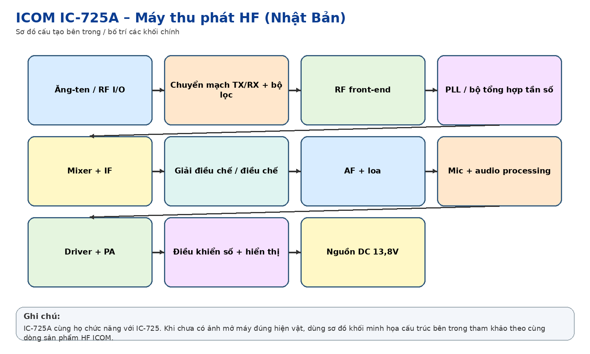
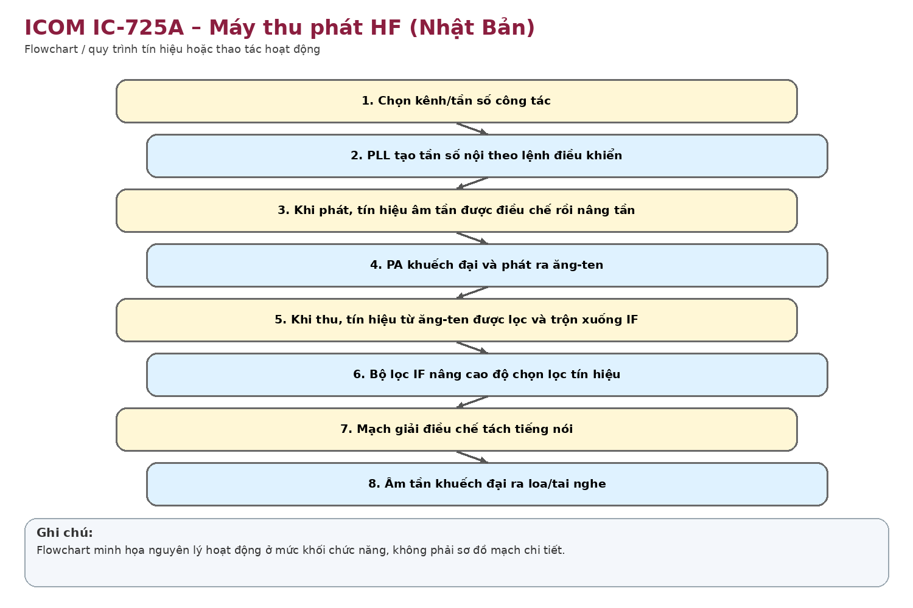

Nhận dạng & niên đại
Công dụng
Công dụng chung
Máy thu phát HF đa chế độ, thu phủ rộng, dùng liên lạc thoại/dữ liệu ở dải sóng ngắn.
Trong thông tin tín hiệu đường sắt
Phù hợp trạm vô tuyến cố định hoặc dự phòng; có thể phục vụ liên lạc điều hành/khẩn cấp khi đường truyền hữu tuyến mất hoặc trong tình huống thiên tai, cứu viện.
Phạm vi làm việc
Có bước tổng hợp tần số nhỏ, nhiều chức năng lọc/AGC/scan/bộ nhớ; phù hợp trạm HF cố định yêu cầu linh hoạt tần số.
Cấu tạo bên trong

Bộ tổng hợp tần số PLL điều khiển CPU; RF unit; các tầng IF và lọc; AGC/noise blanker; detector; audio amp; bộ phát SSB/CW/FM/RTTY/AM; PA RF; logic/memory; hệ thống hiển thị và giao tiếp điều khiển.
Cách thức hoạt động

Thu theo kiến trúc superheterodyne, chuyển tần và lọc trung tần để đạt độ chọn lọc cao. Phát tạo tín hiệu điều chế theo mode, đưa qua driver và PA công suất; PLL/CPU giữ tần số ổn định và cho phép lưu/điều khiển kênh.
Thông số kỹ thuật
Thông số chính
Thu phủ rộng khoảng 0,1–30 MHz; phát trên các băng HF theo phiên bản; các mode SSB, CW, FM, RTTY, AM; công suất RF tối đa khoảng 100 W (AM thấp hơn); nguồn 13,8 VDC ±15%; dòng phát khoảng 20 A; anten 50 Ω; khối lượng khoảng 8,5 kg.
Nguồn điện / cấp nguồn
13,8 VDC; Icom thiết kế IC-PS30 như nguồn AC ngoài phù hợp nhóm máy bàn, trong đó có IC-725A.
Giá trị lịch sử – trưng bày
Thể hiện thế hệ máy HF cao cấp sử dụng CPU, PLL và bộ nhớ – bước chuyển rõ từ vô tuyến analog cơ khí sang điều khiển số.
Tình trạng quan sát
Ảnh có nhãn trưng bày ghi rõ IC-725A; máy còn microphone và nhiều núm chức năng. Chưa thử nguồn/phát.
Ảnh hiện vật
Xác minh thêm & nguồn tham khảo
Căn cứ mốc sử dụng tại Việt Nam/ĐSVN:
Ước
tính theo niên đại model.